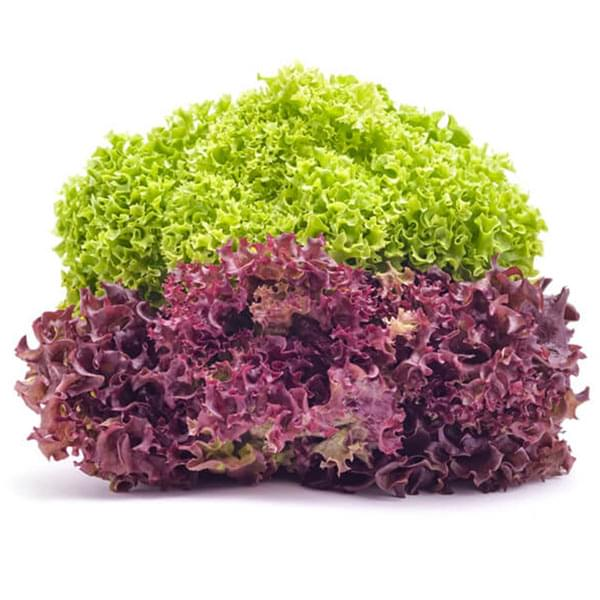
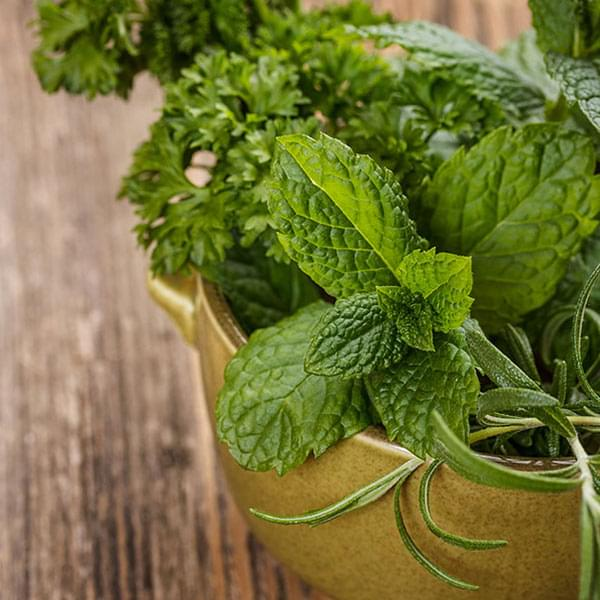
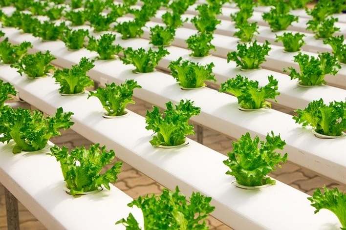
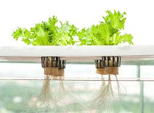

Crop Guide The complete information about hydroponics

Lettuce Plants
Experience fresh and crispy lettuce varieties like crunchy romaine, smooth butterhead, or delicate lollo rossa. Perfect for refreshing salads, these crops are in high demand by consumers, grocers, and chefs.
Weekly Yields (Crop Type)
Bibb
Butterhead
Leaf
Lollo Rossa
Oakleaf
Romaine
Summer Crisp.
Leafy Greens
Rich in flavor and vibrant in color, leafy greens like kale, Swiss chard and spicy arugula grow very well in the UrbanKisaan Kits. The versatility and nutritional value of these plants make them the staples of many international cuisines.
Weekly Yields (Crop Type)
Arugula
Claytonia
Collards
Dandelion
Kale
Mizuna
Mustard Greens
Orach
Tatsoi
Radicchio
Spinach
Herbs Plants

Enhance the flavor of any dish with fragrant herbs like sweet basil, peppery oregano, or fresh mint. Most of these crops typically grow in warm-weather climates, so year-round availability is important for at-home cooks and professional chefs looking to add sophistication to their dishes.
Weekly Yeilds (Crop Type)
Basil
Cutting Celery
Chervil
Chives
Cilantro
Mizuna
Fennel Leaf
Marjoram
Mint
Oregano
Parsley
Rosemary
Sage
Shiso
Impact
The Future
of Farming

Why Hydroponic?
The problems in the prevailing agronomics is concerning. Wide-spread draught, pest ridden crop failures and a strained demand market flush with produce laced with pesticides amidst challenging growing conditions. Soil in the farmlands is degrading due to indiscriminative use of fertilizers, pesticides and carless discharge of polluted industrial effluents and municipal sewerage waters into the irrigation canals and finally to the fertile farmlands. Farmers – who have been the backbone of the Indian economy are in severe distress and are running short on both resources and technological innovation.

Our Research and Development:
We worked with our farmers educating and upskilling them on the ground to make the best use of progressive farming practices like hydroponics, soilless farming and vertical farming. From helping them identify seed varieties, proper seeding techniques, to plant nutrient formulations and how to bring about the best yield in controlled environment growing. We introduce them to the concepts of sustainable farming methods where the typical water consumption is 95% less than traditional soil farming, and harnessing the power of solar to run the farms that minimise our carbon footprint at every level, and not to forget the employment opportunity that each and every acre of our farms generate for farmer families across India.
Placing order
Contact Us
Need help or have a question? We’re here to assist. Lets get started.
For any further queries kindly contact us on the following details :
Phone no- +91 82408 81740 ,+91 98716 28316
E mail- hydroponic.farming1234@gmail.com